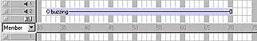

Using Director > Sound, Video, and Synchronization > Controlling sound in the Score
Using Director > Sound, Video, and Synchronization > Controlling sound in the Score |
Controlling sound in the Score
You control sounds in the Score in much the same way that you control sprites. You place sounds in one of the two sound channels at the top of the Score and extend the sounds through as many frames as required.

Unless you use a behavior or other Lingo to override the Score's sound channels, sounds play only as long as the playback head is in the frames that contain the sound. After a sound begins playing, it plays at its own speed. Director cannot speed up or slow down sounds. If a sound is not set to loop, it stops playing at the end, even if the sprite specifies a longer duration. See Looping a sound.
Note: You can speed up or slow down a sound by converting it to a sound-only QuickTime movie and using the movieRate sprite property.
In addition to the two sound channels in the Score, Director can use up to six additional sound channels simultaneously. However, the additional channels are accessible only from Lingo or from behaviors. Available RAM and the computer's speed are the real constraints on the number of sounds Director can use effectively.
To place a sound in the Score:
1 |
If the sound channels are not visible, click the Hide/Show Effects Channels button at the top right side of the Score. |
2 |
Do any of the following: |
Drag a sound cast member from a Cast window to a frame in one of the sound channels. |
|
Double-click a frame in the sound channel and then choose a sound from the Frame Properties: Sound dialog box. You can also preview any sound cast member in the movie from this dialog box. |
|
Drag a sound to the Stage to place it into the first available sound channel in the current frame of the Score. |
|
3 |
Extend the sound through as many frames as necessary. |
New sounds are assigned the same number of frames as set for sprites in the Sprite Preferences dialog box. You may need to adjust the number of frames to make the sound play completely or change a tempo setting to make the playback head wait for the sound to finish. See Synchronizing media. |
|
Note: Sound in the last frame of a movie continues to play (but not loop) until the next movie begins or you exit from the application. This sound can provide a useful transition while Director loads the next movie. You can stop the sound using the puppetSound command.